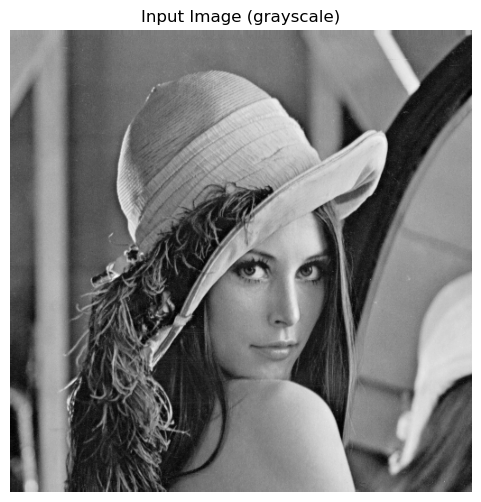
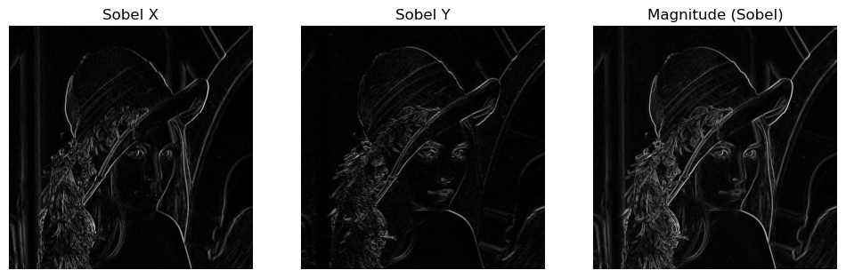
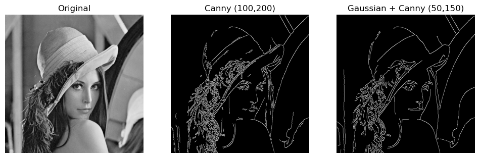
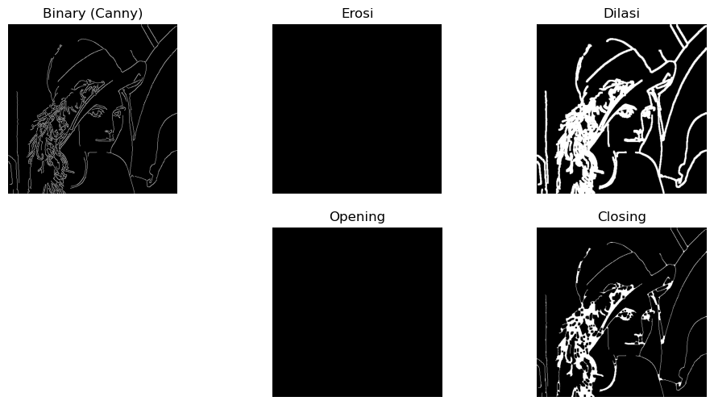
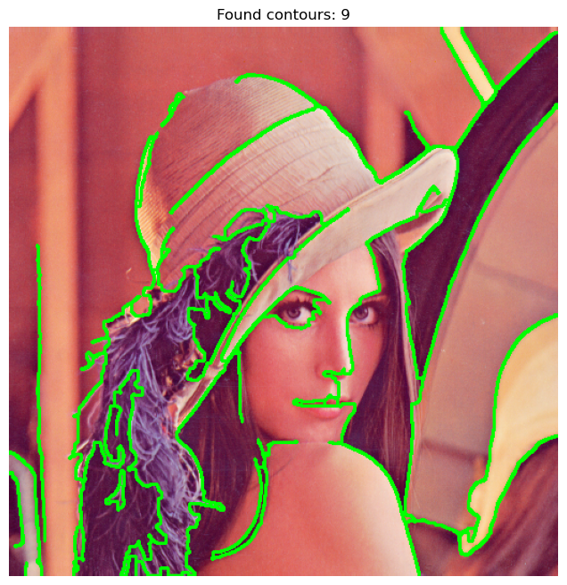
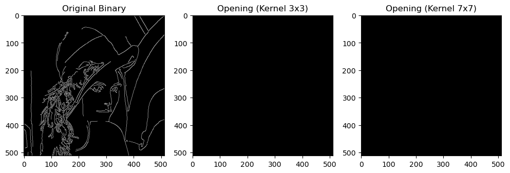
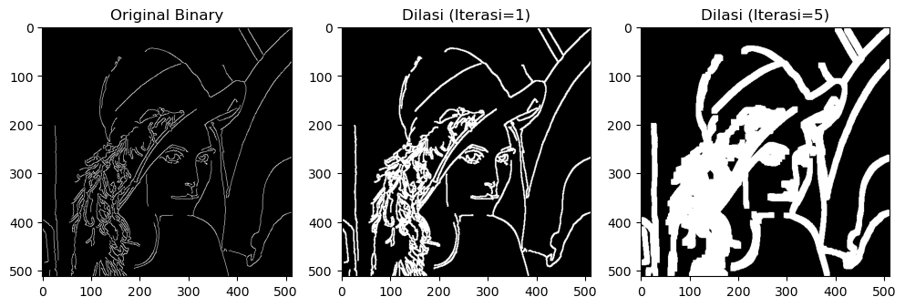
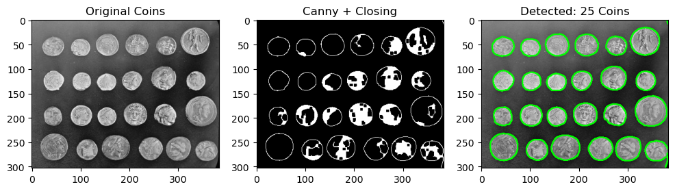

Morfologi Citra#
Praktikum: Deteksi Tepi dan Morfologi Citra
Praktikum ini berisi contoh kode dan instruksi untuk menerapkan Sobel, Canny, serta operasi morfologi (erosi, dilasi, opening, closing) menggunakan Python + OpenCV.
Petunjuk: jalankan tiap cell satu-per-satu. Jika tidak memiliki lenna.png, notebook menggunakan gambar default dari skimage.data.
1. Setup environment#
Install library yang diperlukan jika belum ada: opencv-python, matplotlib, scikit-image, numpy. Jalankan cell berikut jika perlu.
# Jika perlu, uncomment baris pip install berikut
# pip install --quiet opencv-python matplotlib scikit-image numpy
print("Libraries ready (if already installed).")
Libraries ready (if already installed).
2. Load image#
Coba muat data/lenna.png jika tersedia. Jika tidak, gunakan gambar default dari skimage.data (camera).
import os
import cv2
import numpy as np
from skimage import data, img_as_ubyte
import matplotlib.pyplot as plt
# Paths
local_path = "Assets/data/lenna.png"
if os.path.exists(local_path):
img_bgr = cv2.imread(local_path)
img_gray = cv2.cvtColor(img_bgr, cv2.COLOR_BGR2GRAY)
source = "local lenna.png"
else:
# fallback image from skimage
img = data.camera() # grayscale
img_gray = img_as_ubyte(img)
img_bgr = cv2.cvtColor(img_gray, cv2.COLOR_GRAY2BGR)
source = "skimage.data.camera()"
print("Using:", source)
plt.figure(figsize=(6,6))
plt.imshow(img_gray, cmap='gray')
plt.title("Input Image (grayscale)")
plt.axis('off')
plt.show()
Using: local lenna.png

3. Sobel Edge Detection#
Hitung gradien arah X dan Y lalu magnitude. Kita gunakan OpenCV Sobel dan cv2.magnitude.
# Sobel
sobelx = cv2.Sobel(img_gray, cv2.CV_64F, 1, 0, ksize=3)
sobely = cv2.Sobel(img_gray, cv2.CV_64F, 0, 1, ksize=3)
mag = cv2.magnitude(sobelx, sobely)
# Normalize magnitude for display
mag_norm = cv2.normalize(mag, None, 0, 255, cv2.NORM_MINMAX).astype('uint8')
plt.figure(figsize=(12,4))
plt.subplot(1,3,1); plt.imshow(np.abs(sobelx), cmap='gray'); plt.title('Sobel X'); plt.axis('off')
plt.subplot(1,3,2); plt.imshow(np.abs(sobely), cmap='gray'); plt.title('Sobel Y'); plt.axis('off')
plt.subplot(1,3,3); plt.imshow(mag_norm, cmap='gray'); plt.title('Magnitude (Sobel)'); plt.axis('off')
plt.show()

4. Canny Edge Detection#
Gunakan cv2.Canny. Eksperimen dengan threshold bawah dan atas. Juga tunjukkan efek smoothing (Gaussian) sebelum Canny.
# Canny with default thresholds
edges = cv2.Canny(img_gray, 100, 200)
# Canny with Gaussian smoothing first
blur = cv2.GaussianBlur(img_gray, (5,5), 1.4)
edges_blur = cv2.Canny(blur, 50, 150)
plt.figure(figsize=(12,4))
plt.subplot(1,3,1); plt.imshow(img_gray, cmap='gray'); plt.title('Original'); plt.axis('off')
plt.subplot(1,3,2); plt.imshow(edges, cmap='gray'); plt.title('Canny (100,200)'); plt.axis('off')
plt.subplot(1,3,3); plt.imshow(edges_blur, cmap='gray'); plt.title('Gaussian + Canny (50,150)'); plt.axis('off')
plt.show()

5. Operasi Morfologi#
Operasi ini bekerja pada citra biner. Kita akan threshold hasil Canny untuk mendapatkan biner, lalu terapkan operasi morfologi.
Erosi
Dilasi
Opening
Closing
# Convert edges to binary (0/255)
_, binary = cv2.threshold(edges_blur, 1, 255, cv2.THRESH_BINARY)
kernel = np.ones((5,5), np.uint8)
erosion = cv2.erode(binary, kernel, iterations=1)
dilation = cv2.dilate(binary, kernel, iterations=1)
opening = cv2.morphologyEx(binary, cv2.MORPH_OPEN, kernel)
closing = cv2.morphologyEx(binary, cv2.MORPH_CLOSE, kernel)
plt.figure(figsize=(12,6))
plt.subplot(2,3,1); plt.imshow(binary, cmap='gray'); plt.title('Binary (Canny)'); plt.axis('off')
plt.subplot(2,3,2); plt.imshow(erosion, cmap='gray'); plt.title('Erosi'); plt.axis('off')
plt.subplot(2,3,3); plt.imshow(dilation, cmap='gray'); plt.title('Dilasi'); plt.axis('off')
plt.subplot(2,3,5); plt.imshow(opening, cmap='gray'); plt.title('Opening'); plt.axis('off')
plt.subplot(2,3,6); plt.imshow(closing, cmap='gray'); plt.title('Closing'); plt.axis('off')
plt.show()

6. Deteksi Kontur Sederhana#
Gabungkan Canny + morphology untuk mendapatkan kontur yang lebih rapih lalu ekstrak kontur menggunakan cv2.findContours.
# Use closing to fill small gaps, then find contours
proc = closing.copy()
contours, hierarchy = cv2.findContours(proc, cv2.RETR_EXTERNAL, cv2.CHAIN_APPROX_SIMPLE)
# Draw contours on original (color) image
img_contour = img_bgr.copy()
cv2.drawContours(img_contour, contours, -1, (0,255,0), 2)
# Convert BGR to RGB for matplotlib
img_contour_rgb = cv2.cvtColor(img_contour, cv2.COLOR_BGR2RGB)
plt.figure(figsize=(8,8))
plt.imshow(img_contour_rgb); plt.title(f'Found contours: {len(contours)}'); plt.axis('off')
plt.show()

7. Latihan / Tugas#
Ubah ukuran kernel morfologi (3x3, 7x7) dan amati efeknya.
Eksperimen dengan iterasi pada erosi/dilasi.
Terapkan pipeline pada citra berbeda (mis. shapes.png atau coins.png).
Buat laporan singkat dan sertakan screenshot hasil.
1. Variasi Ukuran Kernel (3x3 vs 7x7)#
# Definisi kernel
k3 = np.ones((3,3), np.uint8)
k7 = np.ones((7,7), np.uint8)
# Operasi Opening (Erosi -> Dilasi)
opening_k3 = cv2.morphologyEx(binary, cv2.MORPH_OPEN, k3)
opening_k7 = cv2.morphologyEx(binary, cv2.MORPH_OPEN, k7)
# Visualisasi
plt.figure(figsize=(12, 5))
plt.subplot(1, 3, 1); plt.imshow(binary, cmap='gray'); plt.title('Original Binary')
plt.subplot(1, 3, 2); plt.imshow(opening_k3, cmap='gray'); plt.title('Opening (Kernel 3x3)')
plt.subplot(1, 3, 3); plt.imshow(opening_k7, cmap='gray'); plt.title('Opening (Kernel 7x7)')
plt.show()

Analisis:
Kernel 3x3: Noise kecil (bintik putih sangat kecil) akan hilang, tapi detail objek utama masih terjaga.
Kernel 7x7: Efeknya jauh lebih agresif. Objek-objek kecil atau garis tipis mungkin akan hilang sepenuhnya. Objek besar akan menjadi lebih halus (kurang detail) dibandingkan kernel 3x3.
2. Eksperimen Iterasi (Dilasi)#
kernel = np.ones((3,3), np.uint8)
# Dilasi dengan iterasi berbeda
dilasi_1 = cv2.dilate(binary, kernel, iterations=1)
dilasi_5 = cv2.dilate(binary, kernel, iterations=5)
plt.figure(figsize=(12, 5))
plt.subplot(1, 3, 1); plt.imshow(binary, cmap='gray'); plt.title('Original Binary')
plt.subplot(1, 3, 2); plt.imshow(dilasi_1, cmap='gray'); plt.title('Dilasi (Iterasi=1)')
plt.subplot(1, 3, 3); plt.imshow(dilasi_5, cmap='gray'); plt.title('Dilasi (Iterasi=5)')
plt.show()

Analisis:
Iterasi 1: Garis tepi menebal sedikit, menutup celah yang sangat kecil.
Iterasi 5: Garis tepi menjadi sangat tebal (gemuk). Jika ada dua objek yang berdekatan, mereka kemungkinan besar akan menyatu (merge) menjadi satu blob besar.
3. Pipeline pada Citra Berbeda (coins)#
# Load image coins
coins = data.coins() # Ini sudah grayscale
# 1. Preprocessing (Gaussian Blur)
coins_blur = cv2.GaussianBlur(coins, (5,5), 1.5)
# 2. Canny Edge Detection
# Threshold disesuaikan untuk koin
coins_edges = cv2.Canny(coins_blur, 30, 150)
# 3. Morfologi: Closing untuk menutup garis tepi koin agar menyambung
kernel_coin = np.ones((5,5), np.uint8)
coins_closed = cv2.morphologyEx(coins_edges, cv2.MORPH_CLOSE, kernel_coin)
# 4. Find Contours & Draw
contours_coins, _ = cv2.findContours(coins_closed, cv2.RETR_EXTERNAL, cv2.CHAIN_APPROX_SIMPLE)
coins_result = cv2.cvtColor(coins, cv2.COLOR_GRAY2BGR)
cv2.drawContours(coins_result, contours_coins, -1, (0, 255, 0), 2)
# Visualisasi
plt.figure(figsize=(12, 4))
plt.subplot(1, 3, 1); plt.imshow(coins, cmap='gray'); plt.title('Original Coins')
plt.subplot(1, 3, 2); plt.imshow(coins_closed, cmap='gray'); plt.title('Canny + Closing')
plt.subplot(1, 3, 3); plt.imshow(coins_result); plt.title(f'Detected: {len(contours_coins)} Coins')
plt.show()

4. Draft Laporan Singkat#
1. Pengaruh Ukuran Kernel Berdasarkan percobaan, ukuran kernel mempengaruhi seberapa luas area tetangga yang diproses.
Pada operasi Opening dengan kernel 3x3, noise latar belakang (salt noise) berkurang namun bentuk asli objek masih tajam.
Saat kernel diperbesar menjadi 7x7, operasi menjadi lebih destruktif. Struktur detail yang lebih kecil dari 7x7 piksel hilang sepenuhnya. Ini berguna jika noise berukuran besar, tetapi berisiko merusak bentuk objek utama.
2. Pengaruh Iterasi
Parameter iterations mengulang operasi morfologi sebanyak kali.
Pada Dilasi, iterasi tinggi menyebabkan area putih (foreground) meluas secara signifikan. Hal ini berguna untuk menghubungkan komponen yang terputus agak jauh, namun dapat menyebabkan objek-objek terpisah menjadi menyatu (merging) secara tidak diinginkan.
3. Studi Kasus: Deteksi Koin
Penerapan pipeline (Gaussian -> Canny -> Closing -> FindContours) pada citra coins berhasil mendeteksi tepi koin.
Masalah: Canny saja sering menghasilkan garis tepi yang putus-putus.
Solusi: Operasi Morfologi Closing (Dilasi lalu Erosi) sangat krusial di sini untuk menyambungkan garis-garis Canny yang putus tersebut menjadi satu loop tertutup, sehingga
findContoursdapat mengenali koin sebagai satu objek utuh.